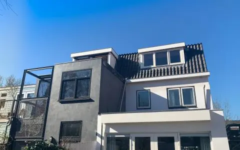
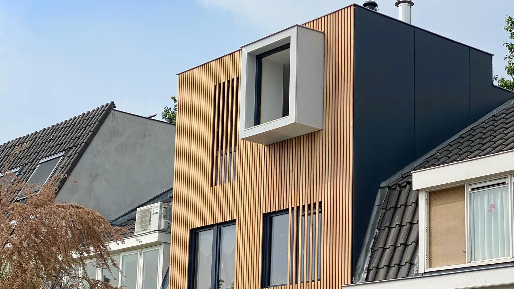
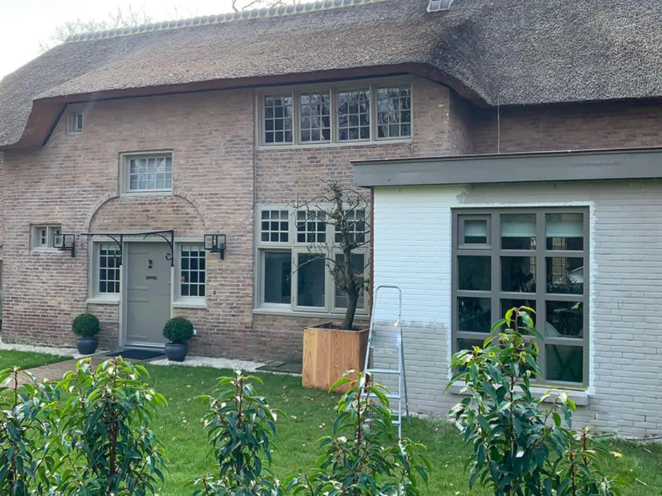
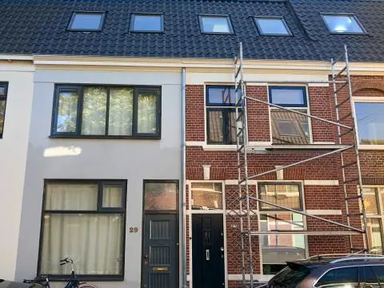
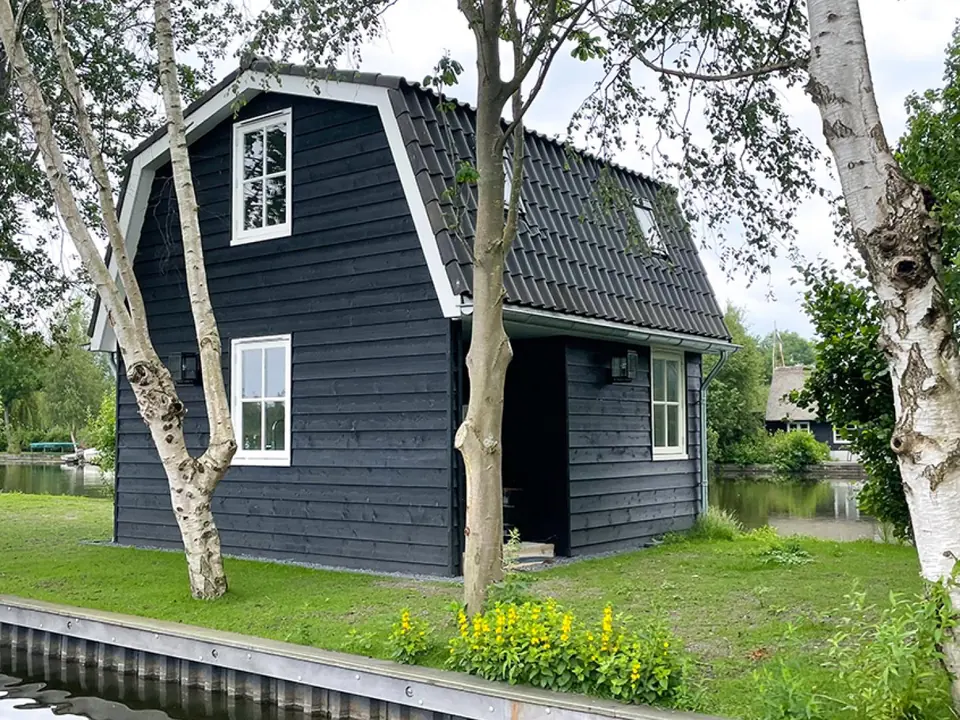
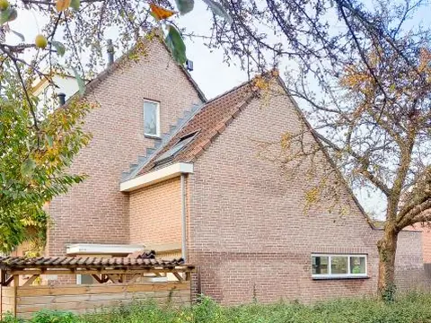
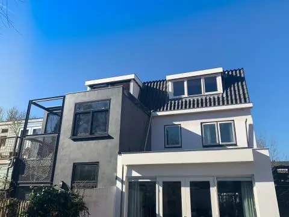
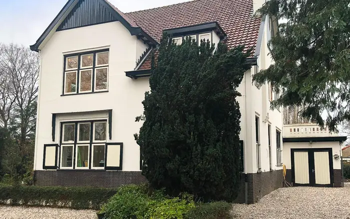

Erbij bouwen
Dakopbouw, aanbouw en nieuwbouw: van plat dak tot complete verdieping.

Totaal renovatie · Aanbouw en nieuwbouw · Dakopbouw · Duurzaam bouwen
Een bouwfamilie uit Utrecht, gespecialiseerd in renovatie en uitbreiding van woningen. Van de eerste schets tot de oplevering.
Dakopbouwen, aanbouwen en complete renovaties, uit de eigen projectenlijst van Koedijk.





Vijf diensten, in twee groepen.

Dakopbouw, aanbouw en nieuwbouw: van plat dak tot complete verdieping.

Totaal renovatie, duurzaam bouwen, tekenwerk, berekeningen, vergunning en kopersbegeleiding.
"Heel blij met hoe onze verbouwing dankzij Koedijk is gerealiseerd! Vanaf het begin was het contact prettig en professioneel en er werd goed meegedacht over onze wensen. De communicatie verliep prettig en afspraken werden duidelijk afgestemd. Het eindresultaat is precies geworden zoals we hadden gehoopt en we zijn ontzettend blij met ons vernieuwde huis. We zouden Koedijk zeker aanbevelen!"
"Koedijk heeft voor ons een Dakopbouw geplaatst en de draagbalk vervangen. Dit is kundig en goed gebeurd! Wij zijn super blij met Koedijk en zullen hun in het vervolg weer contacteren voor bouwwerkzaamheden."
Vertel wat u wilt. Koedijk adviseert vrijblijvend over de mogelijkheden en de alternatieven.